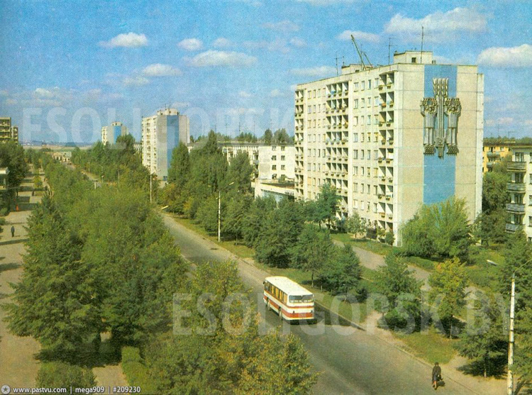
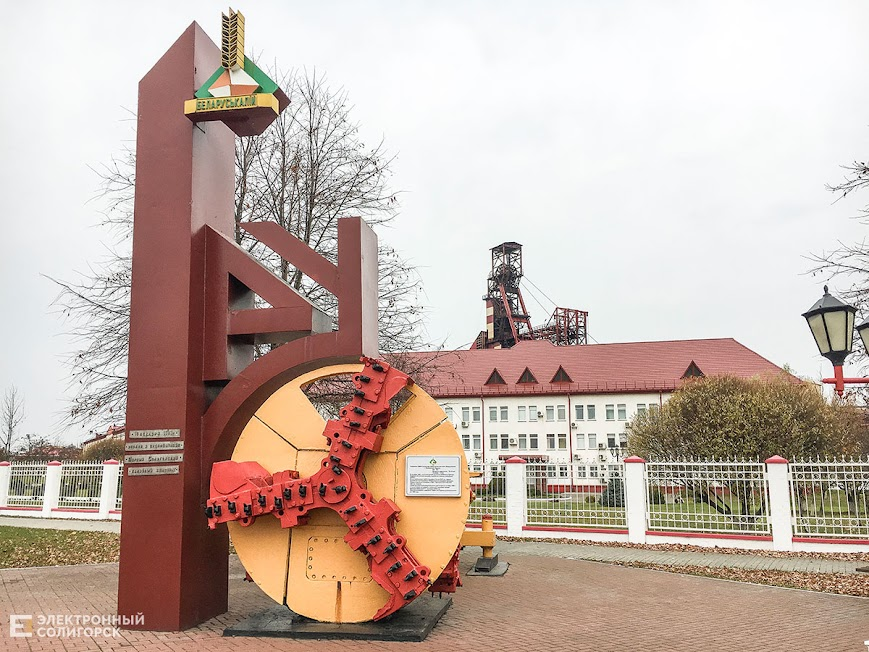
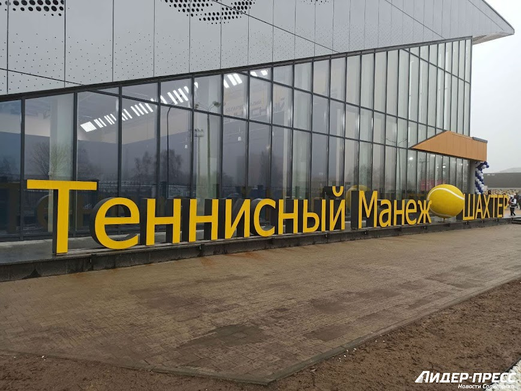

Солигорск возник в связи с открытием и промышленной разработкой калийной соли в районе деревень Вишнёвка, Покровка, Ковалёва Лоза, Теслин, Песчанка
В мае 1958 года было принято решение начать строительство нового комбината на базе Старобинского месторождения и ввести в строй первую очередь в 1963 году. Строительство было объявлено Всесоюзной ударной комсомольской стройкой. Комсомольская организация стройки насчитывала в своих рядах 1500 человек.
10 августа 1958 года около деревни Чижевичи произошёл митинг, посвящённый закладке первого символического камня нового города. На небольшом обелиске надпись: «10.08.1958 г. здесь заложен г. Ново-Старобинск». Спустя годы первый памятник перенесли: в 1968 году к 10-летию Солигорска за клубом строителей был установлен камень с надписью, посвящённый торжественному митингу по закладке города. В 1978 году этот камень был перенесён в сквер имени Ленинского Комсомола, напротив клуба строителей, где был возведён памятник в честь основания города.
| национальность | колличество | процент |
| Белорусы | 88811 | 86,82 % |
| Русские | 8439 | 8,25 % |
| Украинцы | 1141 | 1,12 % |
| Поляки | 185 | 0,18 % |
| Татары | 60 | 0,06 % |
| Армяне | 52 | 0,05 % |
| Азербайджанцы | 36 | 0,04 % |
| Евреи | 34 | 0,03 % |
| Немцы | 30 | 0,03 % |
| Литовцы | 20 | 0,02 % |
| Молдаване | 20 | 0,02 % |
| Казахи | 10 | 0,01 % |
| Чуваши | 10 | 0,01 % |
| Удмурты | 10 | 0,01 % |
| всего | 98858 | |
В городе имеется 11 общеобразовательных школ, один лицей и три гимназии. Также в Солигорске работают 3 учреждения среднего специального образования (колледжи). Существуют организации внеклассной воспитательной работы, в которые входят 11 специализированных детских учреждений. Среди них — школа искусств, художественная школа, станция юных техников, музыкальная школа, детский театр танца, краеведческий музей, центр детского творчества.
В Солигорске действуют 3 учреждения среднего специального образования[18]:
Для проведения досуга к услугам горожан городской дворец культуры, ДК «Строителей», Центр культуры и досуга, сеть библиотек, широкоформатный кинотеатр «Зорка Венера» на 806 мест. Имеется ряд любительских объединений — клубы молодых поэтов и авторской песни. Также город упомянут в песне «Геологическая».
Памятник Владимиру Ильичу Ленину расположен рядом с центральной площадью города, на пересечении улиц Ленина и Козлова. Памятник В. И. Ленину выполнен в форме бюста установленного на монументе. Автор памятника известный советский скульптор А. О. Бембель. Памятник установлен в 1980 году лишь через 22 года после создания города.
Памятник в честь шахтёров-первопроходцев. Установлен в Солигорске 28 августа 1977 года. В центре монументального произведения, которое олицетворяет необычайную силу человека, подарившего земле камень урожайности, фигура шахтёра-первопроходца, вышедшего из забоя. Задумку архитекторов монумента — С. Ф. Ткаченко и В. М. Блохина — воплотил в жизнь скульптор Г. В. Буралкин. Памятник выполнен из бетона, скульптура шахтёра облицована медью. Общая высота монумента — 6 метров. Расположен в районе центрального банка.
.Первый проходческий комбайн Солигорска[20]. В августе 1960 года именно этот комбайн ШБМ-2 весом 32 тонны был спущен в шахту 1 РУ. В настоящее время комбайн поднят на поверхность и установлен в виде памятника на перекрёстке возле 1РУ.
В городе 2 стадиона на 8 тысяч мест, ледовый дворец на 2 тысячи мест, 2 легкоатлетических манежа, 4 бассейна и 6 минибассейнов, 26 спортивных залов, теннисный манеж
4 ДЮСШ на 2,5 тысячи человек.
Известна солигорская футбольная команда «Шахтёр», выигравшая немало трофеев в белорусских первенствах.
В 1999 году образована волейбольная команда «Шахтоспецстрой» позже переименованная в «Шахтёр».
С недавних пор в открытом чемпионате Белоруссии по хоккею успешно выступает также и местный хоккейный клуб «Шахтёр».
